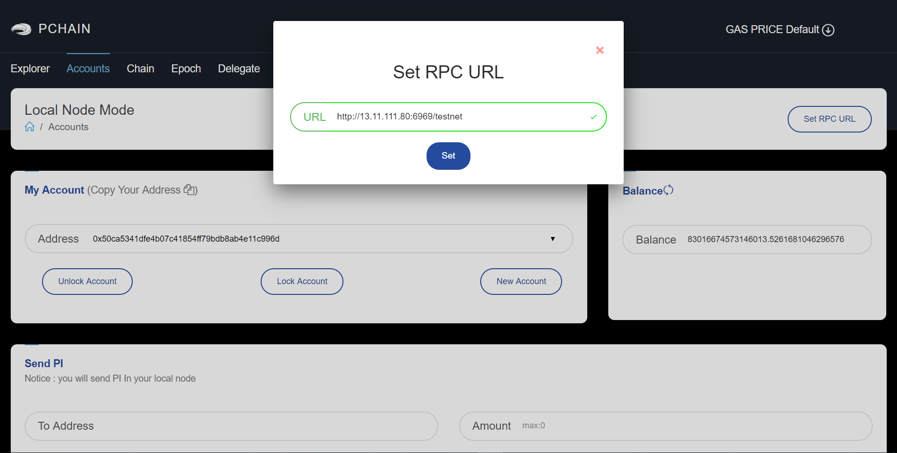

Local Node Mode¶
To use the local node mode of pchain’s wallet, you should prepare a pchain’s rpc url which allows you to access. If you already running pchain on server, run pchain with flag –rpcaddr=0.0.0.0. (If you didn’t run pchain, follow this guide)
Important: Pchain RPC’s defalut port is 6969, remember open your port 6969 only to your local ip and don’t keep your account unlock for long time (the keystore file should copied to datadir/CHIAN_ID/keystore/ if you wanna send any transaction under local node mode)!!!
First, set the RPC URL in wallet:
After this, pchain’s wallet will read the chain state to wallet.